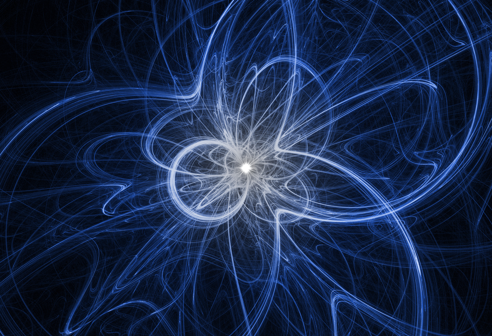
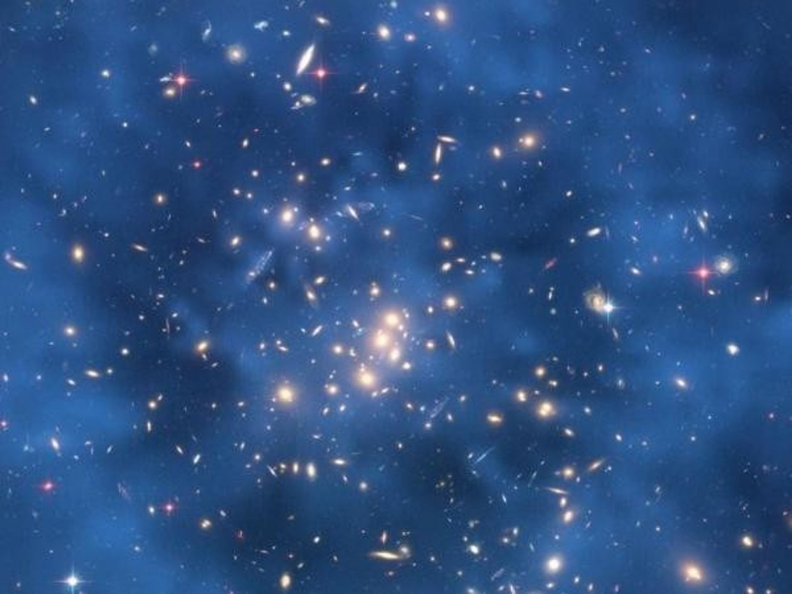

El neutrino es una partícula que siempre ha sido muy misteriosa porque es muy difícil de detectar. Se trata de una partícula elemental subatómica que tiene una masa muy, muy pequeña, un espín de un medio, y no tienen
carga, por eso se llaman neutrinos porque son neutras. Con estas características es muy raro que interaccionen con la materia y por eso son tan complicadas de encontrar ya que atraviesan la materia igual que la luz
atraviesa un cristal. Y como tienen esa masa tan pequeña, de hecho al principio se creía que no tenían masa, se mueven a velocidades cercanas a la de la luz. Los neutrinos surgen en procesos nucleares: en el Big Bang,
en los núcleos de las estrellas y también en los aceleradores de partículas. De las cuatro fuerzas fundamentales que existen en el universo: electromagnética, gravitatoria, débil y fuerte, los neutrinos solo se ven afectados
por la gravitatoria de una manera pequeñísima y la débil. Al no tener carga no interaccionan con la fuerza electromagnética y tampoco interaccionan con la fuerza fuerte. Al principio, el neutrino fue solo una hipótesis.
Se conocía la desintegración beta que es la que se produce cuando en los núcleos inestables hay un cambio en la relación de neutrones y protones. Los núcleos están formados por neutrones y protones pero cuando
se desintegran a veces emiten una partícula y el neutrón puede pasar a protón y al protón a neutrón. Pero la desintegración beta no cumplía la ley de conservación de la energía que es una ley fundamental de la física.

No hay un problema más importante en la cosmología actual que el de la materia oscura. La materia oscura está compuesta por partículas que no absorben, reflejan, o emiten luz, por lo tanto no pueden ser detectada por
observación de la radiación electromagnética. La materia oscura es un material que no puede ser visto directamente. Sabemos que la materia oscura existe debido a los efectos que produce sobre objetos que sí podemos
observar directamente. Los científicos estudian la materia oscura viendo los efectos que esta produce sobre los objetos visibles. Los científicos creen que la materia oscura puede dar cuenta de los movimientos
inexplicables de estrellas entre galaxias. Las computadoras juegan un papel muy importante en la búsqueda de datos sobre la materia oscura. Ellas permiten a los científicos crear modelos que predicen el comportamiento
de las galaxias. Los satélites son también utilizados para obtener datos sobre la materia oscura. En 1997, una imagen del Telescopio Espacial Hubble (vista sobre la derecha) revela que la luz de un cúmulo de galaxias
distante es curvada por otro cúmulo en el primer plano de la imagen. Basados en la trayectoria de la luz, los científicos estimaron que la masa del cúmulo en el primer plano debía ser 250 veces mayor al de la materia
visible del cúmulo. Los científicos creen que la materia oscura en el cúmulo da cuenta de la inexplicable masa del mismo. Los científicos pueden ver la influencia gravitatoria de la materia oscura en las galaxias y estrellas,
pero no encuentran la manera de detectarla con sus herramientas.